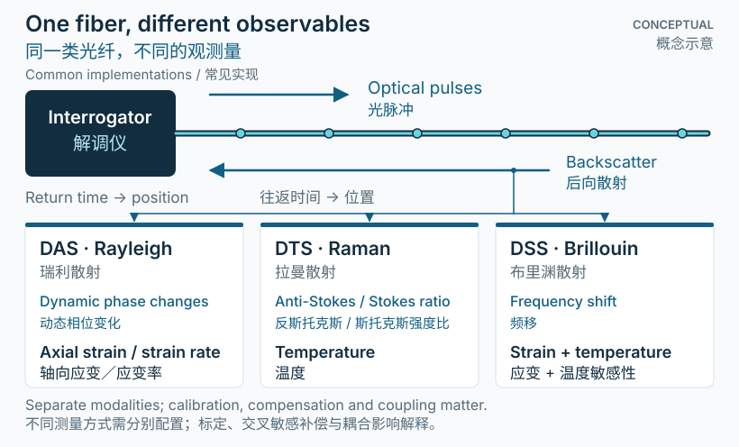
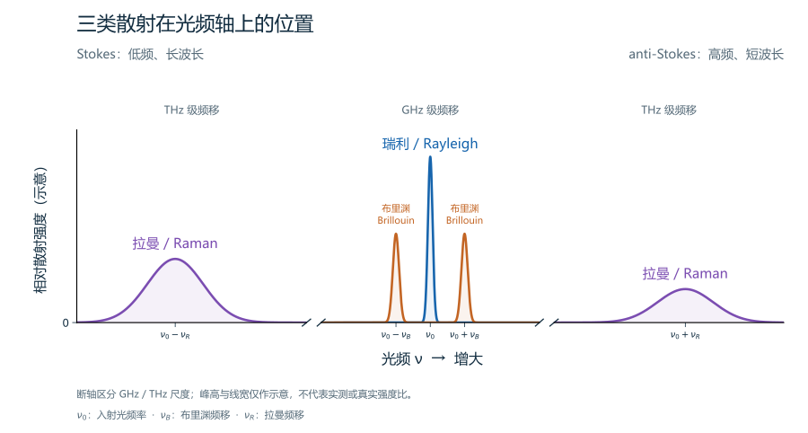
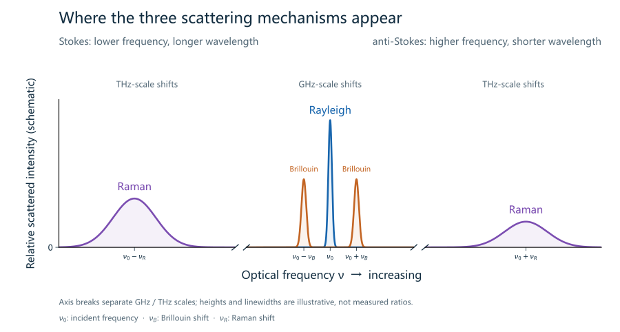

先理解：光纤也是传感器
分布式光纤传感并不是在电缆上串联很多独立的电子探头。地面的解调仪向光纤发送光，分析沿线返回的散射信号，得到随距离变化的观测结果。光纤既传输光，也参与感知；外界温度或变形要通过电缆结构传递到光纤，才能被正确解释。[1][2]
一个重要区别是：测量位置沿光纤排列，不等于它们天然对应准确的井深。安装余长、井口走线和空间轨迹都需要登记。对于使用脉冲飞行时间定位的系统，往返时间可换算为沿光纤的距离；这并不是所有分布式解调方法的唯一定位方式。
DAS 常用于观察快速的轴向应变变化；DTS 关注温度；DSS 关注应变分布或其变化。“声学”也不意味着仪器直接输出麦克风式声压。首先应查看仪器定义、单位、处理方法和校准条件。
Distributed fiber-optic sensing does not require a chain of separate electronic probes. A surface interrogator launches light and analyzes light scattered back from positions along the fiber. The fiber carries the light and responds to its surroundings. Cable construction and coupling determine how environmental temperature or deformation reaches the glass.[1][2]
Distance along the fiber is not automatically well depth. Surface lead-in, installation slack, and trajectory need registration. Pulse time-of-flight systems infer distance from the light’s round-trip travel time; other distributed methods use different interrogation approaches.
DAS commonly follows rapid changes in axial strain; DTS targets temperature; DSS targets distributed strain or its changes. “Acoustic” does not mean a microphone-like pressure reading. Start with the instrument’s output definition, units, processing, and calibration.

深入：三类散射，不同的观测量


- 先看频率位置：瑞利为近似弹性散射；布里渊侧带离入射光很近，拉曼侧带远得多。
- 再看方向：横轴是频率，因此左边 Stokes 光子能量更低、波长更长；右边 anti-Stokes 光子能量更高、波长更短。若横轴换成波长，左右顺序会反转。
- 最后看测量方式：DAS 常读取相干瑞利回波的相位变化；拉曼 DTS 读取经校准的两谱带强度比；布里渊 DSS/测温读取频移，并处理温度与应变交叉敏感。
- Frequency position: Rayleigh is approximately elastic; Brillouin sidebands sit close to the incident light, while Raman bands lie much farther away.
- Direction: Frequency increases to the right: Stokes photons have lower energy and longer wavelength; anti-Stokes photons have higher energy and shorter wavelength. A wavelength axis reverses this order.
- Measurement: DAS often reads coherent Rayleigh phase changes; Raman DTS reads a calibrated band-intensity ratio; Brillouin strain/temperature sensing reads frequency shifts and addresses cross-sensitivity.
DAS：从光学相位到轴向变形
瑞利散射来自光纤内部微小的折射率不均匀性。相干 DAS 分析返回光的变化，通常给出一定标距内的动态轴向应变或应变率；输出取决于仪器与处理方式。理想化观测量可以写成标距内轴向应变的平均值。真实响应还受到光学脉冲、解调和电缆耦合的影响。[2]
DTS：从拉曼信号到温度
拉曼散射涉及光与分子振动的非弹性相互作用。常见拉曼 DTS 利用反斯托克斯与斯托克斯信号的温度依赖关系，并通过校准和衰减修正估计沿线温度。连接损耗、弯曲和差分衰减会影响解释，参考温度区段有助于检验结果。温度灵敏的分布式传感并不只限于拉曼技术。[1]
DSS：应变和温度需要区分
布里渊散射与声学密度波有关，其频移同时受应变与温度影响。瑞利谱移也可相对于基线进行应变测量。因此，“DSS”不应被简单等同于布里渊技术；从光学变化求应变，通常需要温度补偿或独立的温度约束。不同电缆可能有意隔离应变，也可能强调应变传递。[3][4]
DAS: optical changes to axial deformation
Rayleigh scattering arises from microscopic refractive-index variations. Coherent DAS tracks changes in returned light and commonly reports dynamic axial strain or strain rate over a finite gauge length, depending on the instrument and processing. A useful idealization is the average axial strain across that gauge. The complete response also includes optical-pulse effects, demodulation, and cable coupling.[2]
DTS: Raman signals to temperature
Raman scattering is an inelastic interaction between light and molecular vibrations. Common Raman DTS systems use the temperature dependence of anti-Stokes relative to Stokes signals, together with calibration and attenuation corrections, to estimate temperature along the fiber. Connector losses, bends, and differential attenuation matter; reference-temperature sections help check the result. Distributed temperature measurement is not exclusive to Raman techniques.[1]
DSS: separate strain and temperature
Brillouin scattering involves acoustic density waves; its frequency shift responds to both strain and temperature. Rayleigh spectral shifts relative to a baseline can also support distributed strain measurement. DSS is therefore not synonymous with Brillouin sensing. Converting an optical change into strain generally requires thermal compensation or an independent temperature constraint. Cable designs may deliberately isolate strain or promote strain transfer.[3][4]
深入：采样间隔与分辨率
在脉冲飞行时间定位中，沿光纤距离可近似表示为 z = cΔt/(2ng)，其中 c 为真空光速，ng 为光纤群折射率，Δt 为往返传播时间。这个关系给出位置坐标，但并不决定完整的空间分辨率。[1]
相邻输出通道可能比独立可分辨的结构更密。DAS 标距是应变的空间平均长度，不能与通道间距互换；空间与时间采样、感知距离、信噪比及频带之间也存在系统相关的权衡。比较设备时，应同时检查这些参数，而不是只比较通道数量。[2]
For pulse time-of-flight localization, distance is approximately z = cΔt/(2ng), where c is vacuum light speed, ng is fiber group index, and Δt is round-trip travel time. This defines a position coordinate, not the complete spatial resolution.[1]
Output channels can be spaced more closely than independently resolvable features. DAS gauge length describes spatial averaging and is not interchangeable with channel spacing. Spatial and temporal sampling, sensing range, signal-to-noise ratio, and usable bandwidth involve system-specific trade-offs. Compare these together rather than ranking instruments by channel count alone.[2]
仪器原理：从散射到实现
前面介绍散射机制，这里进一步看仪器怎样发射、接收和解调。我们整理的实现部分按 DAS、DTS、DSS 分开，包含元件作用、代表性光路、关键公式和适用条件。
动态应变：相位或瑞利谱变化
9 类代表实现：强度直检、外差/零差相干、延迟干涉、PGC、双脉冲、啁啾、频扫与 OFDR。
进入 DAS 实现部分 →温度：拉曼比值及其他测温路线
6 类代表实现：单端/双端拉曼、编码、光子计数，以及布里渊、瑞利测温；分别说明标定条件。
进入 DTS 实现部分 →光纤应变：布里渊频移或瑞利谱移
7 类代表实现：BOTDR、BOTDA、DPP-BOTDA、BOFDA、BOCDA、OFDR 与频扫相干 OTDR。
进入 DSS 实现部分 →解释边界：从信号到物理过程
可靠的分析应保存基线和质量控制记录，说明光纤位置、标距、时间采样与输出单位，区分测量、处理结果与推断，并明确温度交叉敏感性或耦合未知量。只有结合物理模型、已知激励或独立观测，才能检验拟议的解释。
A fiber response is not an unconverted formation response. DAS sensitivity depends on axial direction and mechanical coupling. Strain transfer from rock to glass need not be one-to-one. The raw optical signal is not automatically pressure, three-component ground motion, or rock strain.[2][4]
Retain baselines and quality-control records. State location, gauge length, temporal sampling, and output units; separate observations from processing and inference. Report thermal cross-sensitivity and unknown coupling. Physical models, known excitations, and independent observations are needed to test the proposed interpretation.
参考资料
- Silixa · Principles of distributed temperature sensing制造商技术原理说明：拉曼 DTS、定位与校准
- Muir, J. B. & Zhan, Z. (2022) · Wavefield-based evaluation of DAS instrument response and array design原始研究 · Geophysical Journal International 229(1), 21–34
- EPFL Group for Fibre Optics · Distributed Brillouin fibre sensing研究机构技术说明：布里渊散射、温度与应变
- Luna · Engineering note EN-FY1402: temperature compensation制造商工程说明（PDF）：瑞利分布式应变的温度补偿
- Bao, X. & Chen, L. (2012) · Recent Progress in Distributed Fiber Optic Sensors散射谱与传感机制综述；本文频谱为原创教学示意，未复制原图。
学习资料 · 图示非实测数据 · 具体工程决策须结合适用要求和独立验证